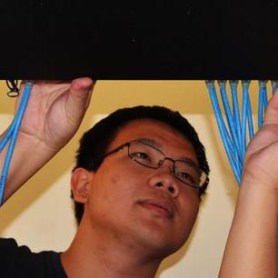

Wei Bai (白巍)
|  |
Senior Researcher |


About Me
I am a Senior Researcher at Microsoft Research Redmond. I received my Ph.D. from Department of Computer Science and Engineering, Hong Kong University of Science and Technology in 2017, advised by Prof. Kai Chen. Before that, I received my B.E. in Information Security from Shanghai Jiao Tong University in 2013.
I am broadly interested in computer networking with a special focus on data center networking. My research work has been published in many top conferences and journals, such as SIGCOMM, NSDI, and ToN. I also have rich experience in developing and operating production cloud networks. Currently, I am mainly focusing on network infrastructure to enable cloud-scale RDMA deployments. I am also an active contributor to SONiC, an open source network operating system.
I am always looking forward to new challenges instead of staying in my comfort zone.
Recent Professional Activities
Journal Editorship: Journal of Systems Research (JSys)
Program Committee: SIGMETRICS/Performance 2022, SOSR 2021, APNet 2021, APNet 2020, APSys 2020, APNet 2019, ICDCS 2018
Registration Chair: SIGCOMM 2019
Web Chair: SOSR 2021, APNet 2019, APNet 2018
News
July 2021 Invited to serve on the TPC of SIGMETRICS/Performance 2022. Please submit!
May 2021 1Pipe accepted to SIGCOMM 2021.
Jan 2021 TLT accepted to EuroSys 2021.